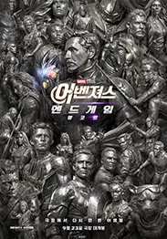
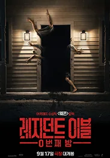
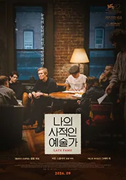
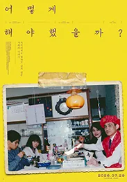
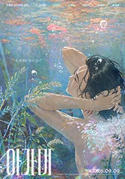
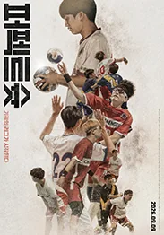
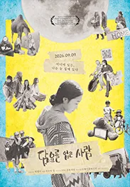
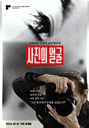

9월 4주차 극장가는 추석 연휴를 앞두고 개봉한 한국영화 대작 신작들이 나란히 1, 2위에 올랐다. 6주간 이어진 〈오디세이〉의 독주를 멈춰 세우고 극장가 판도를 단숨에 뒤바꾼 한 주였다.
1위는 9월 23일 개봉해 차트 정상에 오른 한국영화 〈암살자(들)〉이다. 1974년 8월 15일, 대한민국을 충격에 빠뜨린 영부인 저격 사건의 의혹과 배후를 영화적 상상으로 추적하는 이야기를 그렸다. 개봉 첫 주 155만 명의 관객, 153억 원의 매출을 기록했다.
2위는 역시 9월 23일 개봉한 한국 범죄 영화 〈타짜: 벨제붑의 노래〉다. <타짜> 시리즈의 4편이자 마지막 영화로, 온라인 카지노 사업으로 세상을 다 가진 줄 알았던 남자 장태영(변요한)과 그의 모든 것을 빼앗은 같은 이름의 절친 박태영(노재원)이 글로벌 도박판에서 다시 만나 복수의 한 판을 벌이게 되는 영화다. 개봉 첫 주 81만 명의 관객, 83억 원의 매출을 기록했다.
3위는 크리스토퍼 놀란 감독의 신작 〈오디세이〉다. 트로이 전쟁 영웅 오디세우스(맷 데이먼)가 고향 이타카로 돌아가는 길에 마주하는 신들과 괴물들의 방해와 험난한 여정을 그린 대서사 액션 블록버스터다. 이번 주 57만 명의 관객을 동원하고 72억 원의 매출을 기록했으며, 누적 관객 수는 1,178만 명이다.
4위는 한국영화 〈인턴〉이다. 30대 젊은 여성 CEO가 이끄는 스타트업에 풍부한 인생 경험을 가진 시니어 인턴이 합류하면서 세대 갈등을 넘어 서로를 이해하고 성장해 나가는 오피스 휴먼 코미디다. 최민식과 한소희가 주연을 맡았으며, 이번 주 35만 명의 관객을 모아 35억 원의 매출을 올렸다. 누적 관객 수는 76만 명이다.
5위는 미국 공포영화 〈옵세션〉이다. 무엇이든 이루어 주는 스틱 ‘원 위시 윌로우’에 소원을 빈 그날 밤 이후, 연인이 된 두 남녀의 끔찍한 사랑을 다룬 이야기다. 이번 주 15만 명의 관객을 모으며 16억 원의 매출을 기록했고, 누적 관객 수는 85만 명이다.
9월 4주차 흥행 TOP10
암살자(들)
개봉일 2026-09-23
매출액 153억 원
관객수 155만 명
타짜: 벨제붑의 노래
개봉일 2026-09-23
매출액 83억 원
관객수 81만 명

오디세이
개봉일 2026-08-05
매출액 72억 원
관객수 57만 명
인턴
개봉일 2026-09-16
매출액 35억 원
관객수 35만 명

옵세션
개봉일 2026-09-02
매출액 16억 원
관객수 15만 명
가능한 사랑
개봉일 2026-09-23
매출액 12억 원
관객수 12만 명

어벤져스: 엔드게임 앙코르
개봉일 2026-09-23
매출액 13억 원
관객수 11만 명

레지던트 이블: 0번째 밤
개봉일 2026-09-17
매출액 9억 원
관객수 8만 명

스파이더맨: 브랜드 뉴 데이
개봉일 2026-07-29
매출액 4억 원
관객수 4만 명
바다 탐험대 옥토넛 어보브 앤 비욘드 : 두근두근 대자연 어드벤처
개봉일 2026-09-23
매출액 2억 원
관객수 2만 명
9월 4주차 독립·예술영화 극장가는 미국, 한국, 일본 등 다양한 국적의 작품들이 오른 가운데, 드라마와 애니메이션, 다큐멘터리 등 다채로운 장르의 작품들이 순위권을 채운 한 주였다.
1위는 9월 23일 개봉해 차트 정상에 오른 미국영화 〈나의 사적인 예술가〉로, 윌렘 대포, 그레타 리 주연, 거장 마틴 스콜세지가 총괄 제작했다. 과거 시를 썼던 뉴욕의 우체국 직원 ‘에드’가 젊고 부유한 예술 모임에서 ‘재발견된 천재’로 새롭게 조명되고, 뒤늦은 찬사 속 잊고 있던 자신을 다시 마주하며 벌어지는 이야기를 담았다.
2위는 두 계단 순위가 상승한 한국영화 〈철들 무렵〉이다. <이장>(2020)으로 데뷔한 정승오 감독의 두 번째 영화로, 말기 암 환자인 아버지를 둘러싸고 몸도, 돈도, 꿈도 서로에게 저당 잡힌 세 사람의 모습을 그린 가족극이다.
3위는 7월 말 개봉 이후부터 독립예술영화 극장가에서 화제의 다큐멘터리로 입소문을 낳고 있는 일본영화 〈어떻게 해야 했을까?〉다. 조현병 증상을 보이는 누나를 가족이라는 이름으로 현관문에 자물쇠를 채워 둔 부모와 그 가족의 시간을 20여 년간 담아낸 남동생의 사적인 기록을 다뤘다. 누적 관객 수는 10만 6천 명이다.
4위는 한국 애니메이션 영화 〈아가미〉로, 구병모 작가의 동명 소설을 원작으로 한 작품이다. 깊은 물 속에 던져진 날 아가미가 생겨난, 세상에서 유일한 아이 ‘곤’과 그의 세계에 전부였던 존재들의 눈부신 이야기를 그렸다. 누적 관객 수는 1만 9천 명이다.
5위는 한국 다큐멘터리 영화 〈청년 조용기: 신을 저주하던 청년, 시대를 긋는 종이 되다〉이다. 불우한 환경과 절망적인 폐결핵 투병 속에서 신을 원망하던 청년 조용기가 신앙을 마주하고 세계적인 목회자로 성장해 나간 청년 시절의 고뇌와 삶을 영화화했다. 누적 관객 수는 2만 6천 명이다.
9월 4주차 독립·예술영화 흥행 TOP10

나의 사적인 예술가
개봉일 2026-09-23
매출액 37백만 원
관객수 4천 명
철들 무렵
개봉일 2026-09-16
매출액 19백만 원
관객수 2천 명

어떻게 해야 했을까?
개봉일 2026-07-29
매출액 17백만 원
관객수 2천 명

아가미
개봉일 2026-09-09
매출액 16백만 원
관객수 2천 명
청년 조용기: 신을 저주하던 청년, 시대를 긋는 종이 되다
개봉일 2026-09-11
매출액 17백만 원
관객수 2천 명
싱 어게인
개봉일 2026-09-02
매출액 16백만 원
관객수 2천 명

퍼펙트슛
개봉일 026-09-09
매출액 7백만 원
관객수 1천 명
꿈꾸던 모험
개봉일 2026-09-23
매출액 8백만 원
관객수 1천 명

담요를 입은 사람
개봉일 2026-09-09
매출액 5백만 원
관객수 1천 명

사진의 얼굴
개봉일 2026-09-02
매출액 5백만 원
관객수 1천 명
2026년 9월 4주차 극장가는 추석 연휴를 앞두고 개봉한 한국영화 대작들의 흥행 돌풍에 힘입어 전체 관객 수와 매출액이 모두 폭발적인 급증세를 나타냈다. 극장 전체 관객 수는 391만 명, 매출액은 412억 원으로, 전주(9월 3주차) 152만 명, 167억 원 대비 각각 239만 명, 245억 원 증가했다.
개봉 편수는 총 11편으로 전주(6편) 대비 5편 늘어난 가운데, 시장의 주도권을 한국영화가 가져갔다. 한국영화는 총 5편이 상영되어 286만 명의 관객을 모으며 288억 원의 매출을 올렸다. 이번 주 외국영화 관객 수와 비교하면 약 2.7배 많은 수치다. 전주(52만 명, 53억 원) 대비 관객 수와 매출액은 각각 234만 명, 235억 원 늘어남에 따라, 한국영화 점유율(관객 수 기준)은 전주(34.4%) 대비 38.7%p 대폭 상승한 73.1%를 기록했다.
반면 지난 6주간 극장가를 지배해 온 외국영화는 관객 수 소폭 증가에도 불구하고 점유율이 하락했다. 외국영화는 6편이 상영되어 105만 명의 관객을 동원하고 125억 원의 매출을 올렸다. 전주(100만 명, 113억 원) 대비 관객 수와 매출액이 각각 5만 명, 12억 원 소폭 증가했으나, 한국영화의 강세에 밀려 외국영화 점유율은 전주(65.6%) 대비 38.7%p 급감한 26.9%에 그쳤다.
최근 4주간의 전체적인 추이를 살펴보면 극장가는 9월 1주차 203만 명에서 9월 2주차 159만 명, 9월 3주차 152만 명으로 3주 연속 이어지던 비수기 하향 곡선을 단숨에 끊어내고 9월 4주차에는 391만 명까지 치솟으며 올가을 최고치를 경신했다.
점유율 측면에서도 반전이 일어났다. 9월 1주차 12.3%, 9월 2주차 11.8%로 10%대 초반에 머물렀던 한국영화 점유율은 9월 3주차 34.4%에 이어 9월 4주차에는 73.1%까지 상승하며, 한 달 넘게 이어진 외국영화의 강세를 꺾고 시장 주도권을 되찾았다.
최근 4주간 극장 매출 및 한국영화 점유율 (2026년 9월 28일 조회 기준)
| 기간 | 전체 | 한국 | 외국 | ||||||||
|---|---|---|---|---|---|---|---|---|---|---|---|
| 개봉편수 | 매출액(억 원) | 관객수(만 명) | 개봉편수 | 매출액 | 관객수 | 점유율 | 개봉편수 | 매출액 | 관객수 | 점유율 | |
| 9월 4주차 | 11 | 412 | 391 | 5 | 288 | 286 | 73.1% | 6 | 125 | 105 | 26.9% |
| 9월 3주차 | 6 | 167 | 152 | 3 | 53 | 52 | 34.4% | 3 | 113 | 100 | 65.6% |
| 9월 2주차 | 27 | 173 | 159 | 19 | 19 | 19 | 11.8% | 8 | 153 | 140 | 88.2% |
| 9월 1주차 | 17 | 218 | 203 | 8 | 24 | 25 | 12.3% | 9 | 195 | 178 | 87.7% |